Change analysis for Lao People’s Democratic Republic for PRIMAP-hist
v2.8_final compared to v2.7_final
This changelog is published under the creative commons non-commercial
share alike license. For more information see creativecommons.org.
Overview over
emissions by sector and gas
The following figures show the aggregate national total emissions
excluding LULUCF AR6GWP100 for the country reported priority scenario.
The dotted lines show the v2.7_final data.
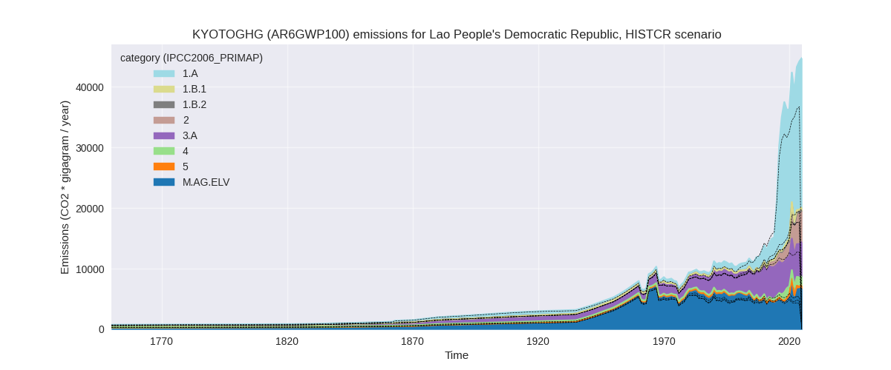
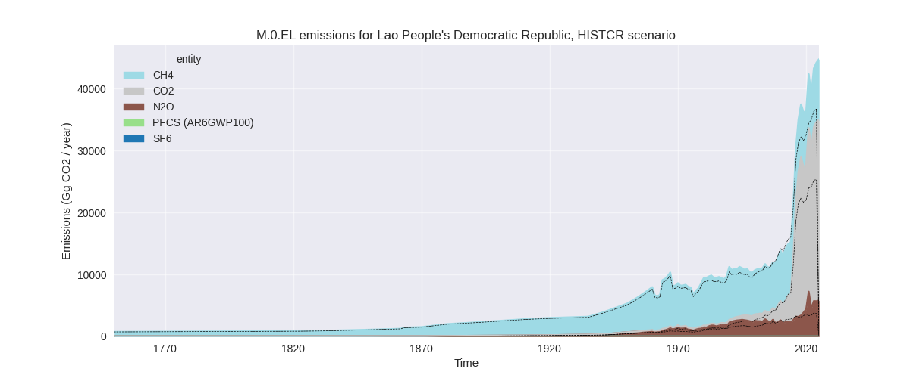
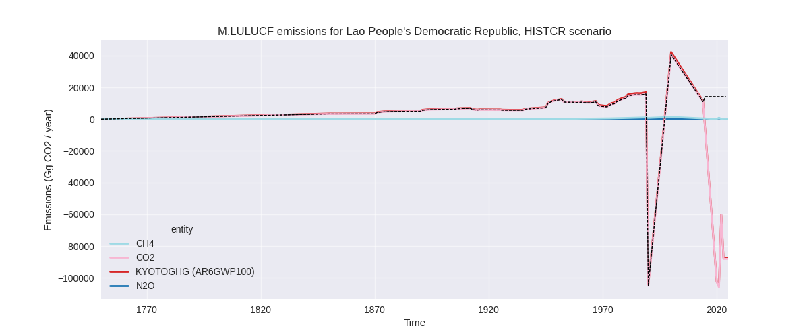
The following figures show the aggregate national total emissions
excluding LULUCF AR6GWP100 for the third party priority scenario. The
dotted lines show the v2.7_final data.
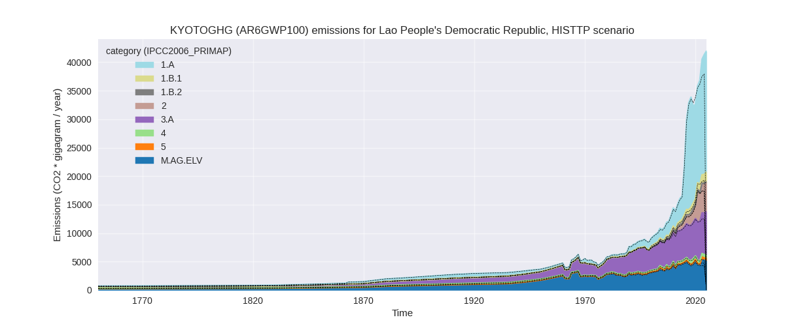
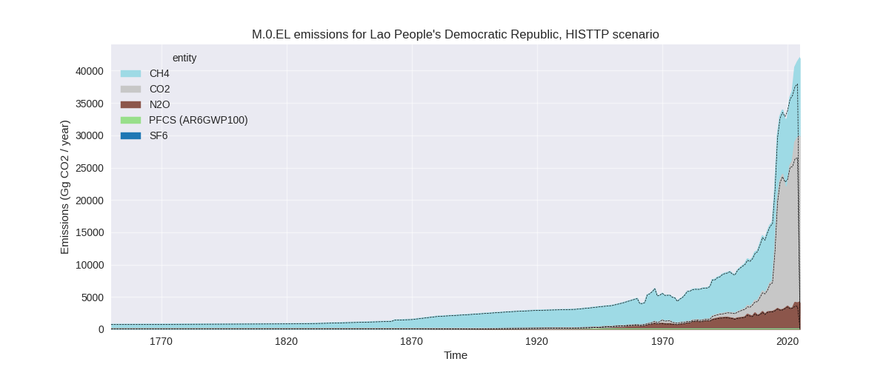
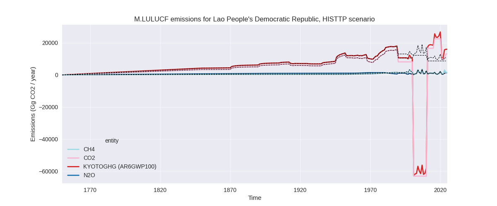
Used country reported data
The changelog with this information is available upon request for
non-commercial customers. Paying commercial customers will be provided
with the information.
Overview over changes
In the country reported priority scenario we have the following
changes for aggregate Kyoto GHG and national total emissions excluding
LULUCF (M.0.EL):
- Emissions in 2024 have changed by 20.4%% (7482.81 Gg CO2 / year)
- Emissions in 1990-2024 have changed by 8.6%% (1494.35 Gg CO2 / year)
In the third party priority scenario we have the following changes
for aggregate Kyoto GHG and national total emissions excluding LULUCF
(M.0.EL):
- Emissions in 2024 have changed by 9.0%% (3408.59 Gg CO2 / year)
- Emissions in 1990-2024 have changed by 1.5%% (262.02 Gg CO2 / year)
Most
important changes per scenario and time frame
In the country reported priority scenario the
following sector-gas combinations have the highest absolute impact on
national total KyotoGHG (AR6GWP100) emissions in 2024
(up to 10 with either at least 0.2% impact on total emissions or at
least 20% change):
- 1: 1.A, CO2 with 7018.81 Gg CO2 / year (42.1%, 19.1%)
- 2: M.AG.ELV, N2O with 2487.78 Gg CO2 / year (125.1%, 6.8%)
- 3: 3.A, CH4 with -1641.82 Gg CO2 / year (-24.8%, -4.5%)
- 4: 1.B.1, CH4 with -1457.54 Gg CO2 / year (-77.2%, -4.0%)
- 5: 4, CH4 with 969.04 Gg CO2 / year (197.3%, 2.6%)
- 6: 1.A, CH4 with 410.94 Gg CO2 / year (275.9%, 1.1%)
- 7: 2, CO2 with 309.85 Gg CO2 / year (6.3%, 0.8%)
- 8: 3.A, N2O with -287.36 Gg CO2 / year (-34.5%, -0.8%)
- 9: 1.A, N2O with -161.39 Gg CO2 / year (-47.1%, -0.4%)
- 10: M.AG.ELV, CH4 with -106.01 Gg CO2 / year (-4.7%, -0.3%)
In the country reported priority scenario the
following sector-gas combinations have the highest absolute impact on
national total KyotoGHG (AR6GWP100) emissions in
1990-2024 (up to 10 with either at least 0.1% impact on
total emissions or at least 10% change):
- 1: 1.A, CO2 with 1377.67 Gg CO2 / year (25.9%, 8.0%)
- 2: M.AG.ELV, N2O with 930.28 Gg CO2 / year (66.8%, 5.4%)
- 3: 1.B.1, CH4 with -447.54 Gg CO2 / year (-84.2%, -2.6%)
- 4: 3.A, CH4 with -333.94 Gg CO2 / year (-7.6%, -1.9%)
- 5: 3.A, N2O with -319.91 Gg CO2 / year (-57.2%, -1.8%)
- 6: 4, CH4 with 201.71 Gg CO2 / year (68.1%, 1.2%)
- 7: 2, CO2 with 129.15 Gg CO2 / year (12.8%, 0.7%)
- 8: M.AG.ELV, CH4 with -118.96 Gg CO2 / year (-3.7%, -0.7%)
- 9: 1.A, CH4 with 72.82 Gg CO2 / year (37.8%, 0.4%)
- 10: 5, N2O with 35.64 Gg CO2 / year (17.5%, 0.2%)
In the third party priority scenario the following
sector-gas combinations have the highest absolute impact on national
total KyotoGHG (AR6GWP100) emissions in 2024 (up to 10
with either at least 0.2% impact on total emissions or at least 20%
change):
- 1: 1.A, CO2 with 2252.67 Gg CO2 / year (12.5%, 5.9%)
- 2: M.AG.ELV, N2O with 506.22 Gg CO2 / year (25.5%, 1.3%)
- 3: M.AG.ELV, CH4 with 461.99 Gg CO2 / year (20.7%, 1.2%)
- 4: 1.B.1, CH4 with -351.88 Gg CO2 / year (-18.6%, -0.9%)
- 5: 2, CO2 with 315.10 Gg CO2 / year (6.4%, 0.8%)
- 6: 1.A, CH4 with 121.88 Gg CO2 / year (27.9%, 0.3%)
- 7: M.AG.ELV, CO2 with 14.32 Gg CO2 / year (inf%, 0.0%)
- 8: 1.B.1, N2O with -9.26 Gg CO2 / year (-57.1%, -0.0%)
In the third party priority scenario the following
sector-gas combinations have the highest absolute impact on national
total KyotoGHG (AR6GWP100) emissions in 1990-2024 (up
to 10 with either at least 0.1% impact on total emissions or at least
10% change):
- 1: 2, CO2 with 119.43 Gg CO2 / year (11.8%, 0.7%)
- 2: 1.A, CO2 with 48.64 Gg CO2 / year (0.9%, 0.3%)
- 3: 5, N2O with 35.64 Gg CO2 / year (17.5%, 0.2%)
- 4: M.AG.ELV, CH4 with 27.92 Gg CO2 / year (1.2%, 0.2%)
- 5: M.AG.ELV, N2O with 26.95 Gg CO2 / year (1.9%, 0.2%)
- 6: 1.B.1, CH4 with -21.70 Gg CO2 / year (-4.1%, -0.1%)
- 7: M.AG.ELV, CO2 with 5.15 Gg CO2 / year (inf%, 0.0%)
Notes on data changes
The changelog with this information is available upon request for
non-commercial customers. Paying commercial customers will be provided
with the information.
Changes by sector and gas
For each scenario and time frame the changes are displayed for all
individual sectors and all individual gases. In the sector plot we use
aggregate Kyoto GHGs in AR6GWP100. In the gas plot we usenational total
emissions without LULUCF.
country reported scenario
2024
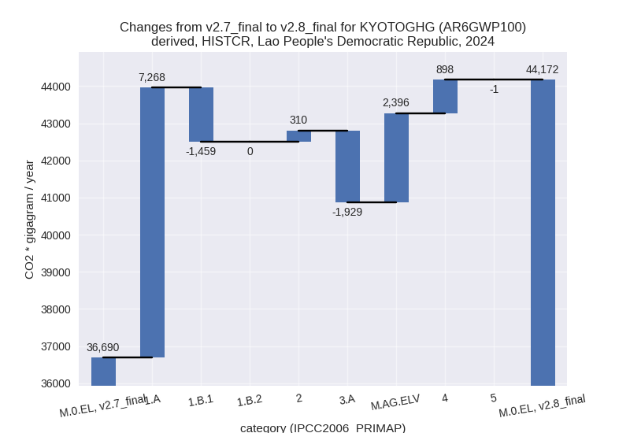
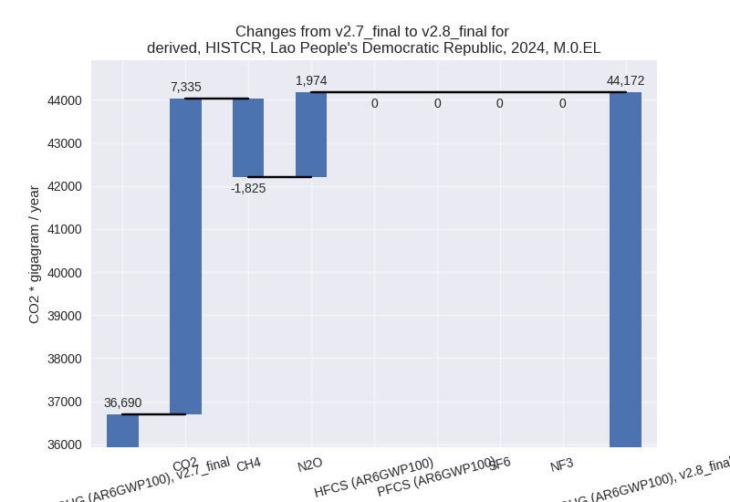
1990-2024
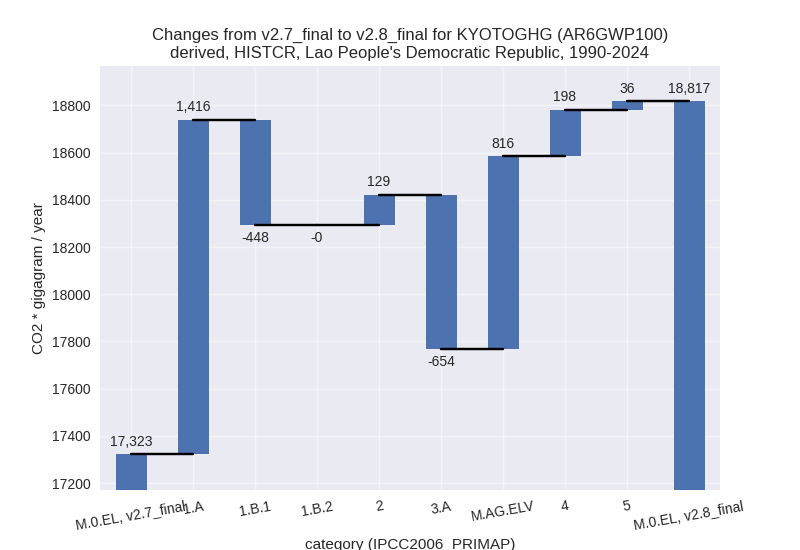
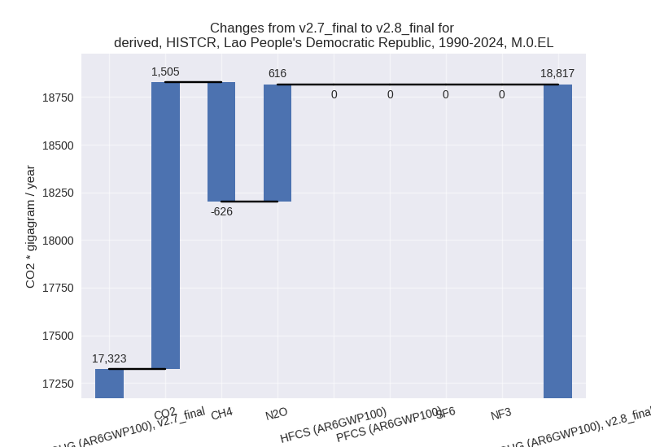
third party scenario
2024
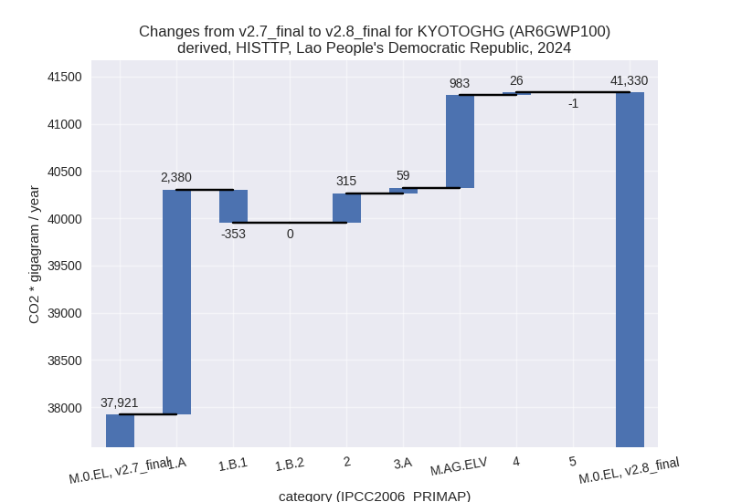
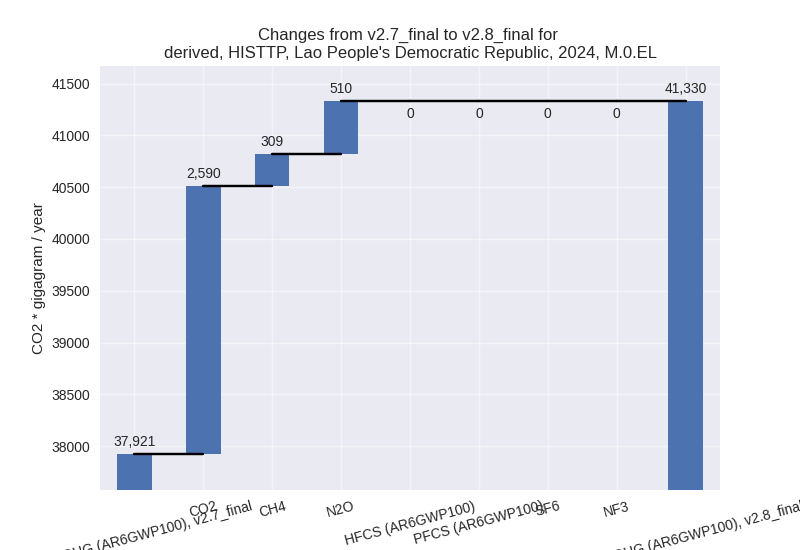
1990-2024
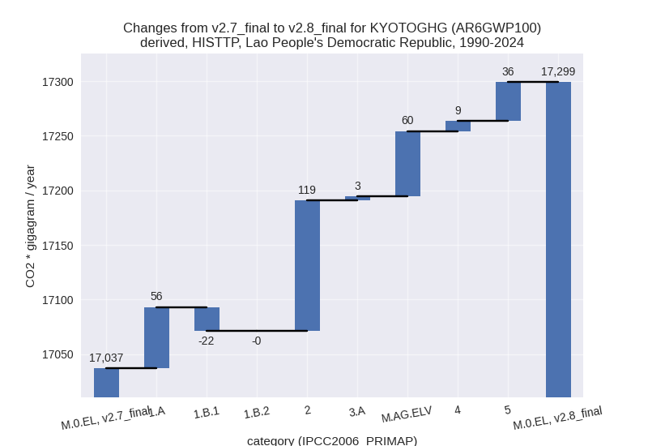
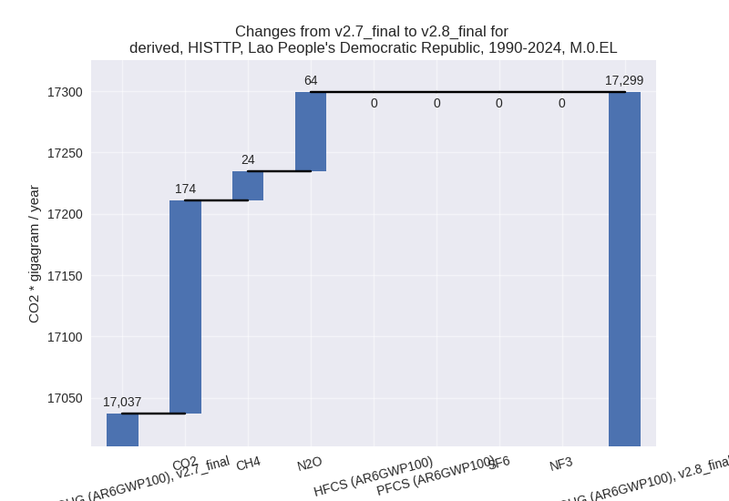
Detailed changes for the
scenarios:
country reported scenario
(HISTCR):
Most important changes
per time frame
For 2024 the following sector-gas combinations have
the highest absolute impact on national total KyotoGHG (AR6GWP100)
emissions in 2024 (up to 20 with either at least 0.2%
impact on total emissions or at least 20% change):
- 1: 1.A, CO2 with 7018.81 Gg CO2 / year (42.1%), 19.1%)
- 2: M.AG.ELV, N2O with 2487.78 Gg CO2 / year (125.1%), 6.8%)
- 3: 3.A, CH4 with -1641.82 Gg CO2 / year (-24.8%), -4.5%)
- 4: 1.B.1, CH4 with -1457.54 Gg CO2 / year (-77.2%), -4.0%)
- 5: 4, CH4 with 969.04 Gg CO2 / year (197.3%), 2.6%)
- 6: 1.A, CH4 with 410.94 Gg CO2 / year (275.9%), 1.1%)
- 7: 2, CO2 with 309.85 Gg CO2 / year (6.3%), 0.8%)
- 8: 3.A, N2O with -287.36 Gg CO2 / year (-34.5%), -0.8%)
- 9: 1.A, N2O with -161.39 Gg CO2 / year (-47.1%), -0.4%)
- 10: M.AG.ELV, CH4 with -106.01 Gg CO2 / year (-4.7%), -0.3%)
- 11: 4, N2O with -55.05 Gg CO2 / year (-54.0%), -0.2%)
- 12: 4, CO2 with -16.08 Gg CO2 / year (-98.9%), -0.0%)
- 13: M.AG.ELV, CO2 with 14.32 Gg CO2 / year (inf%), 0.0%)
- 14: 1.B.1, N2O with -9.26 Gg CO2 / year (-57.1%), -0.0%)
- 15: 1.B.1, CO2 with 7.69 Gg CO2 / year (69.0%), 0.0%)
For 1990-2024 the following sector-gas combinations
have the highest absolute impact on national total KyotoGHG (AR6GWP100)
emissions in 1990-2024 (up to 20 with either at least
0.1% impact on total emissions or at least 10% change):
- 1: 1.A, CO2 with 1377.67 Gg CO2 / year (25.9%), 8.0%)
- 2: M.AG.ELV, N2O with 930.28 Gg CO2 / year (66.8%), 5.4%)
- 3: 1.B.1, CH4 with -447.54 Gg CO2 / year (-84.2%), -2.6%)
- 4: 3.A, CH4 with -333.94 Gg CO2 / year (-7.6%), -1.9%)
- 5: 3.A, N2O with -319.91 Gg CO2 / year (-57.2%), -1.8%)
- 6: 4, CH4 with 201.71 Gg CO2 / year (68.1%), 1.2%)
- 7: 2, CO2 with 129.15 Gg CO2 / year (12.8%), 0.7%)
- 8: M.AG.ELV, CH4 with -118.96 Gg CO2 / year (-3.7%), -0.7%)
- 9: 1.A, CH4 with 72.82 Gg CO2 / year (37.8%), 0.4%)
- 10: 5, N2O with 35.64 Gg CO2 / year (17.5%), 0.2%)
- 11: 1.A, N2O with -34.01 Gg CO2 / year (-22.5%), -0.2%)
- 12: 4, CO2 with -8.11 Gg CO2 / year (-87.0%), -0.0%)
- 13: M.AG.ELV, CO2 with 5.15 Gg CO2 / year (inf%), 0.0%)
- 14: 1.B.1, N2O with -0.67 Gg CO2 / year (-13.8%), -0.0%)
- 15: 1.B.1, CO2 with 0.65 Gg CO2 / year (24.9%), 0.0%)
Changes in the main sectors for aggregate KyotoGHG (AR6GWP100)
are
- 1: Total sectoral emissions in 2022 are 21714.36 Gg
CO2 / year which is 55.7% of M.0.EL emissions. 2024 Emissions have
changed by 30.4% (5809.25 Gg CO2 /
year). 1990-2024 Emissions have changed by 15.6% (968.92 Gg CO2 / year). For 2024 the
changes per gas
are:
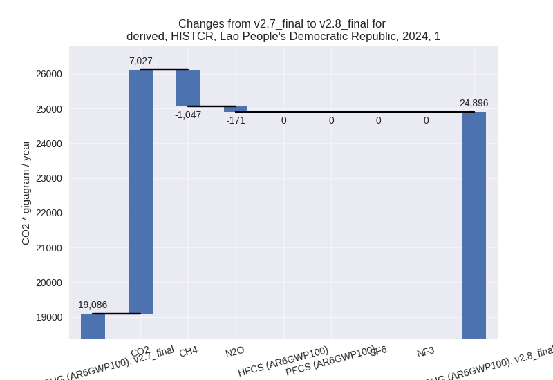
For 1990-2024 the changes per gas
are:
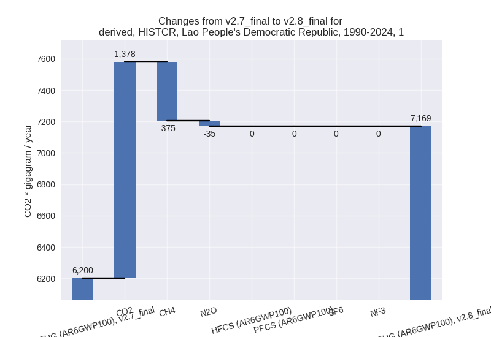
The changes come from the following subsectors:
- 1.A: Total sectoral emissions in 2022 are 21286.66
Gg CO2 / year which is 98.0% of category 1 emissions. 2024 Emissions
have changed by 42.3% (7268.36 Gg
CO2 / year). 1990-2024 Emissions have changed by 25.0% (1416.49 Gg CO2 / year). For 2024
the changes per gas
are:
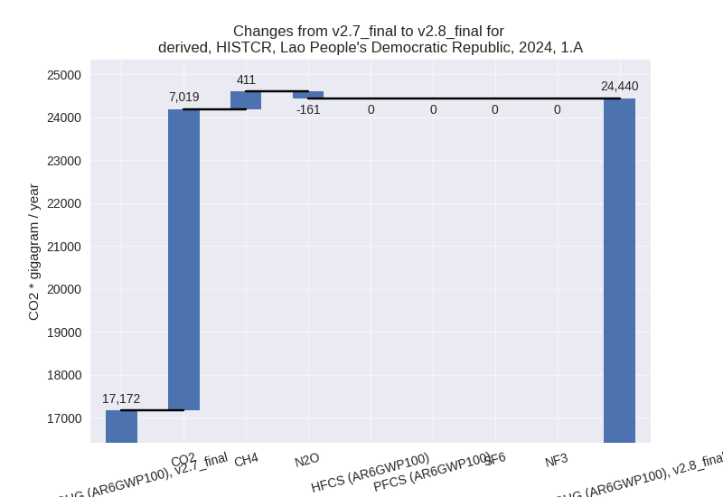
For 1990-2024 the changes per gas
are:
There is no subsector information available in PRIMAP-hist.
- 1.B.1: Total sectoral emissions in 2022 are 427.70
Gg CO2 / year which is 2.0% of category 1 emissions. 2024 Emissions have
changed by -76.2% (-1459.11 Gg CO2 /
year). 1990-2024 Emissions have changed by -83.0% (-447.56 Gg CO2 / year). For 2024
the changes per gas
are:
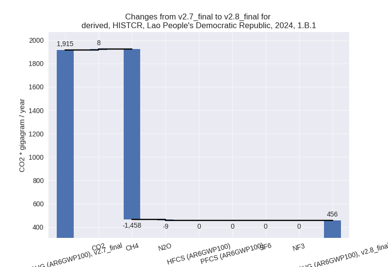
For 1990-2024 the changes per gas
are:
There is no subsector information available in PRIMAP-hist.
- 1.B.2: Total sectoral emissions in 2022 are 0.00 Gg
CO2 / year which is 0.0% of category 1 emissions. 2024 Emissions have
changed by 0.0% (0.00 Gg CO2 /
year). 1990-2024 Emissions have changed by -0.8% (-0.00 Gg CO2 / year).
- 2: Total sectoral emissions in 2022 are 5026.54 Gg
CO2 / year which is 12.9% of M.0.EL emissions. 2024 Emissions have
changed by 6.3% (309.85 Gg CO2 /
year). 1990-2024 Emissions have changed by 12.8% (129.15 Gg CO2 / year). For 2024 the
changes per gas
are:
For 1990-2024 the changes per gas
are:
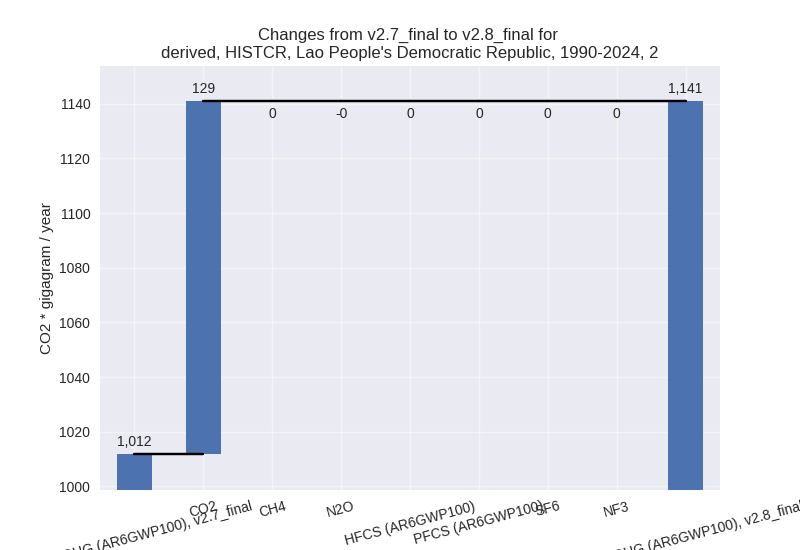
- M.AG: Total sectoral emissions in 2022 are 10574.01
Gg CO2 / year which is 27.1% of M.0.EL emissions. 2024 Emissions have
changed by 4.0% (466.92 Gg CO2 /
year). 1990-2024 Emissions have changed by 1.7% (162.62 Gg CO2 / year). For 2024 the
changes per gas
are:
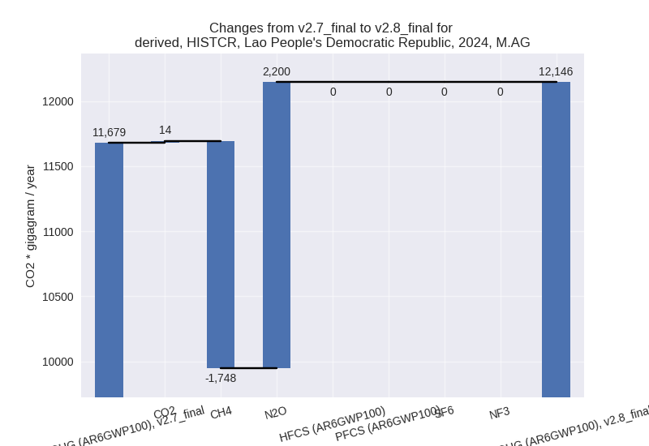
The changes come from the following subsectors:
- 3.A: Total sectoral emissions in 2022 are 5211.27
Gg CO2 / year which is 49.3% of category M.AG emissions. 2024 Emissions
have changed by -25.9% (-1929.17 Gg
CO2 / year). 1990-2024 Emissions have changed by -13.2% (-653.85 Gg CO2 / year). For 2024
the changes per gas
are:
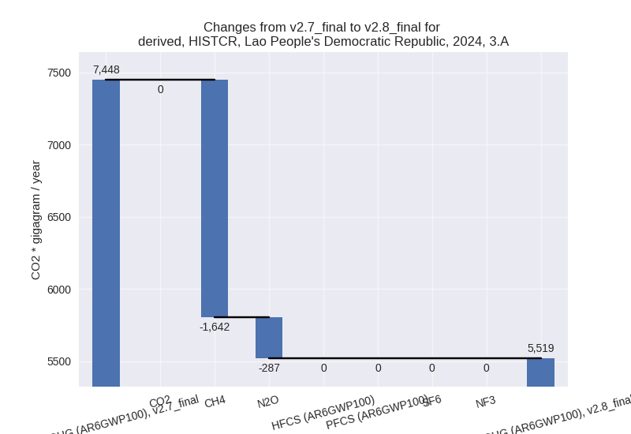
For 1990-2024 the changes per gas
are:
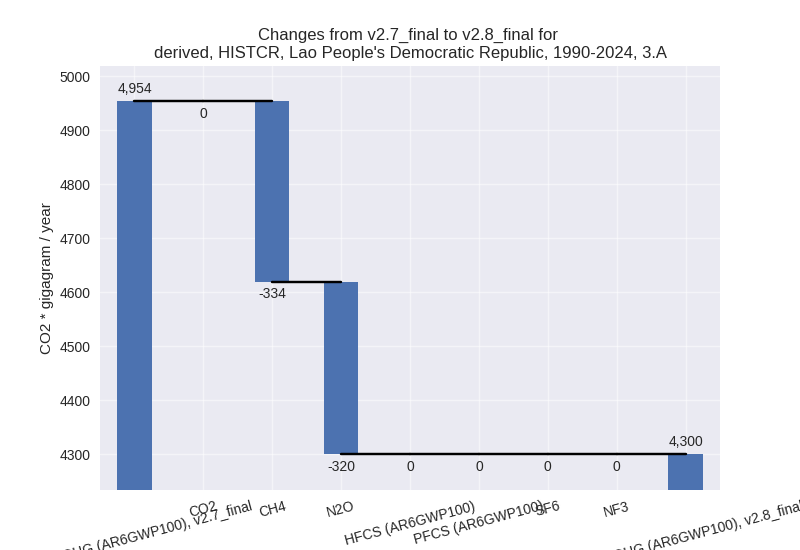
There is no subsector information available in PRIMAP-hist.
- M.AG.ELV: Total sectoral emissions in 2022 are
5362.73 Gg CO2 / year which is 50.7% of category M.AG emissions. 2024
Emissions have changed by 56.6%
(2396.09 Gg CO2 / year). 1990-2024 Emissions have changed by 17.8% (816.47 Gg CO2 / year). For 2024 the
changes per gas
are:
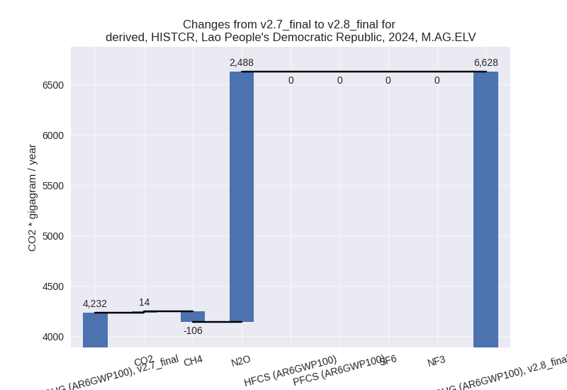
For 1990-2024 the changes per gas
are:
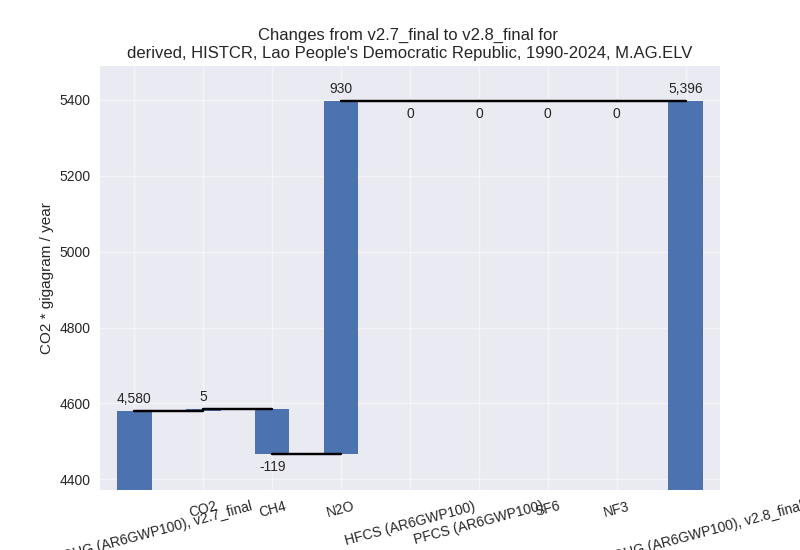
There is no subsector information available in PRIMAP-hist.
- 4: Total sectoral emissions in 2022 are 1444.81 Gg
CO2 / year which is 3.7% of M.0.EL emissions. 2024 Emissions have
changed by 147.3% (897.91 Gg CO2 /
year). 1990-2024 Emissions have changed by 53.1% (198.02 Gg CO2 / year). For 2024 the
changes per gas
are:
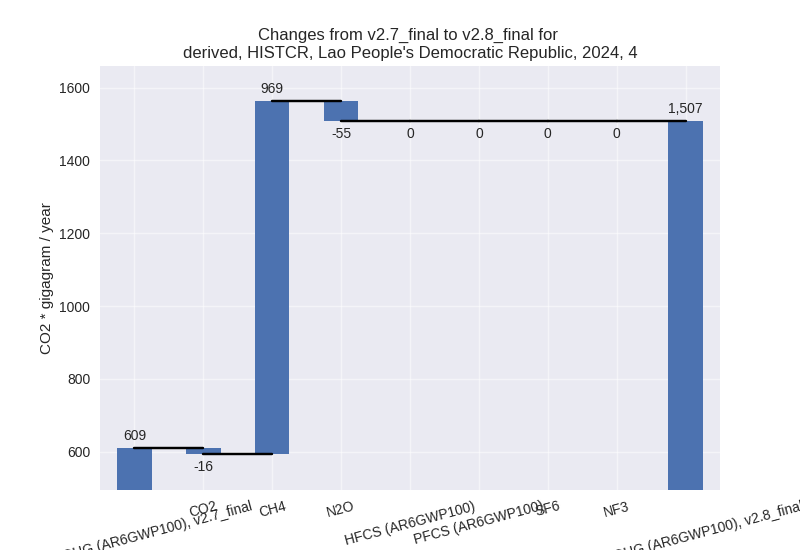
For 1990-2024 the changes per gas
are:
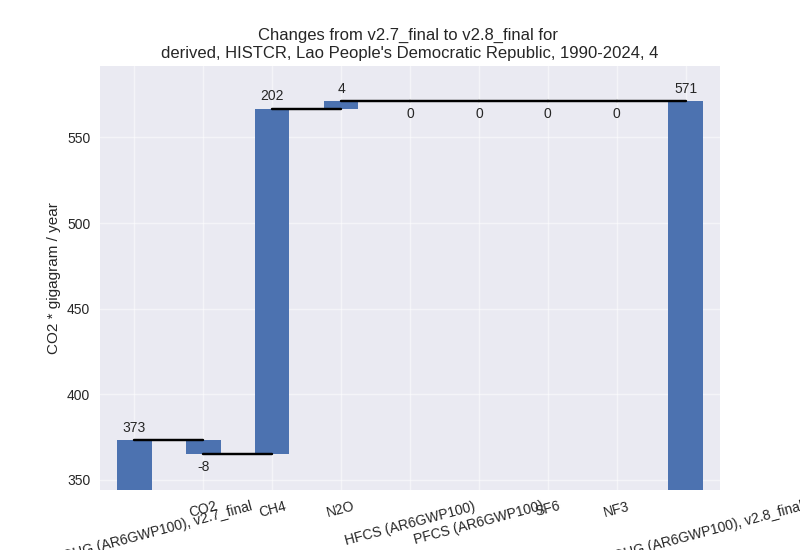
- 5: Total sectoral emissions in 2022 are 235.47 Gg
CO2 / year which is 0.6% of M.0.EL emissions. 2024 Emissions have
changed by -0.3% (-1.13 Gg CO2 /
year). 1990-2024 Emissions have changed by 17.5% (35.64 Gg CO2 / year). For 1990-2024
the changes per gas
are:
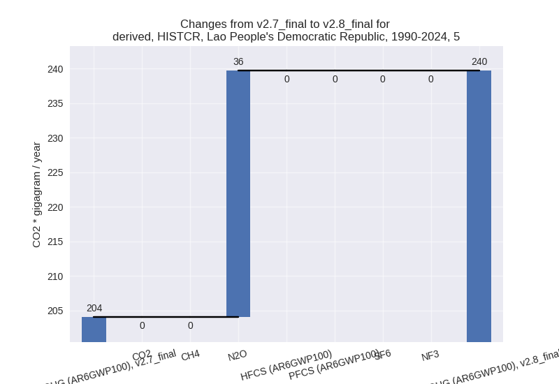
third party scenario (HISTTP):
Most important changes
per time frame
For 2024 the following sector-gas combinations have
the highest absolute impact on national total KyotoGHG (AR6GWP100)
emissions in 2024 (up to 20 with either at least 0.2%
impact on total emissions or at least 20% change):
- 1: 1.A, CO2 with 2252.67 Gg CO2 / year (12.5%), 5.9%)
- 2: M.AG.ELV, N2O with 506.22 Gg CO2 / year (25.5%), 1.3%)
- 3: M.AG.ELV, CH4 with 461.99 Gg CO2 / year (20.7%), 1.2%)
- 4: 1.B.1, CH4 with -351.88 Gg CO2 / year (-18.6%), -0.9%)
- 5: 2, CO2 with 315.10 Gg CO2 / year (6.4%), 0.8%)
- 6: 1.A, CH4 with 121.88 Gg CO2 / year (27.9%), 0.3%)
- 7: M.AG.ELV, CO2 with 14.32 Gg CO2 / year (inf%), 0.0%)
- 8: 1.B.1, N2O with -9.26 Gg CO2 / year (-57.1%), -0.0%)
- 9: 1.B.1, CO2 with 7.69 Gg CO2 / year (69.0%), 0.0%)
For 1990-2024 the following sector-gas combinations
have the highest absolute impact on national total KyotoGHG (AR6GWP100)
emissions in 1990-2024 (up to 20 with either at least
0.1% impact on total emissions or at least 10% change):
- 1: 2, CO2 with 119.43 Gg CO2 / year (11.8%), 0.7%)
- 2: 1.A, CO2 with 48.64 Gg CO2 / year (0.9%), 0.3%)
- 3: 5, N2O with 35.64 Gg CO2 / year (17.5%), 0.2%)
- 4: M.AG.ELV, CH4 with 27.92 Gg CO2 / year (1.2%), 0.2%)
- 5: M.AG.ELV, N2O with 26.95 Gg CO2 / year (1.9%), 0.2%)
- 6: 1.B.1, CH4 with -21.70 Gg CO2 / year (-4.1%), -0.1%)
- 7: M.AG.ELV, CO2 with 5.15 Gg CO2 / year (inf%), 0.0%)
- 8: 1.B.1, N2O with -0.67 Gg CO2 / year (-13.8%), -0.0%)
- 9: 1.B.1, CO2 with 0.65 Gg CO2 / year (24.9%), 0.0%)
Changes in the main sectors for aggregate KyotoGHG (AR6GWP100)
are
- 1: Total sectoral emissions in 2022 are 19769.96 Gg
CO2 / year which is 53.7% of M.0.EL emissions. 2024 Emissions have
changed by 9.9% (2026.75 Gg CO2 /
year). 1990-2024 Emissions have changed by 0.5% (34.41 Gg CO2 / year). For 2024 the
changes per gas
are:
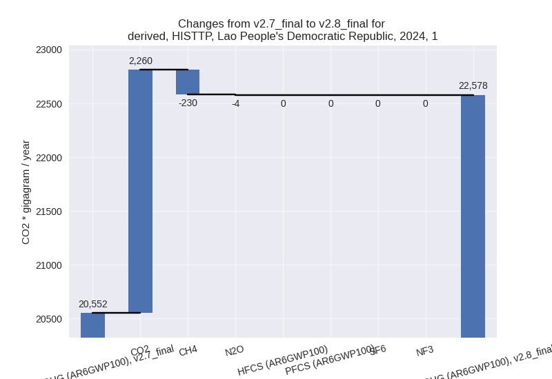
The changes come from the following subsectors:
- 1.A: Total sectoral emissions in 2022 are 18303.22
Gg CO2 / year which is 92.6% of category 1 emissions. 2024 Emissions
have changed by 12.8% (2380.19 Gg
CO2 / year). 1990-2024 Emissions have changed by 0.9% (56.14 Gg CO2 / year). For 2024 the
changes per gas
are:
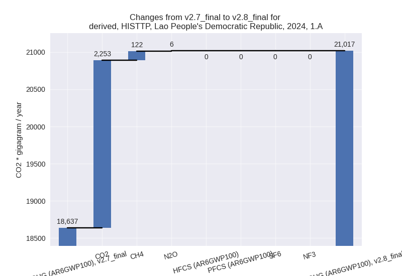
There is no subsector information available in PRIMAP-hist.
- 1.B.1: Total sectoral emissions in 2022 are 1466.74
Gg CO2 / year which is 7.4% of category 1 emissions. 2024 Emissions have
changed by -18.5% (-353.45 Gg CO2 /
year). 1990-2024 Emissions have changed by -4.0% (-21.73 Gg CO2 / year). For 2024 the
changes per gas
are:
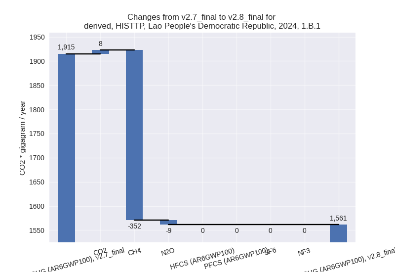
For 1990-2024 the changes per gas
are:
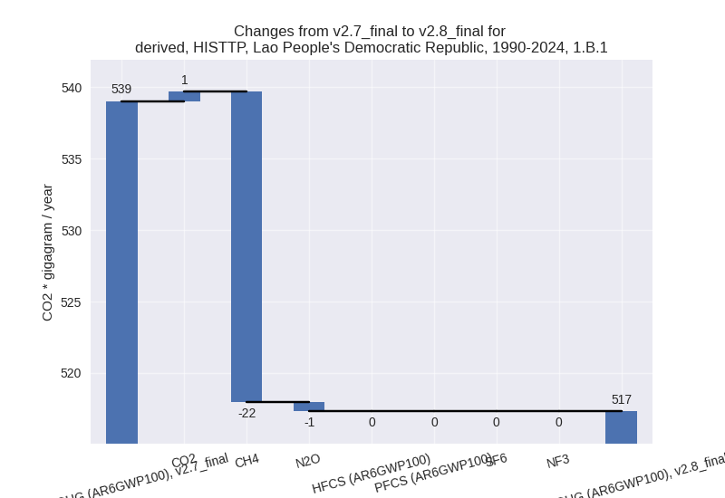
There is no subsector information available in PRIMAP-hist.
- 1.B.2: Total sectoral emissions in 2022 are 0.00 Gg
CO2 / year which is 0.0% of category 1 emissions. 2024 Emissions have
changed by 0.0% (0.00 Gg CO2 /
year). 1990-2024 Emissions have changed by -0.8% (-0.00 Gg CO2 / year).
- 2: Total sectoral emissions in 2022 are 5032.13 Gg
CO2 / year which is 13.7% of M.0.EL emissions. 2024 Emissions have
changed by 6.4% (315.10 Gg CO2 /
year). 1990-2024 Emissions have changed by 11.8% (119.43 Gg CO2 / year). For 2024 the
changes per gas
are:
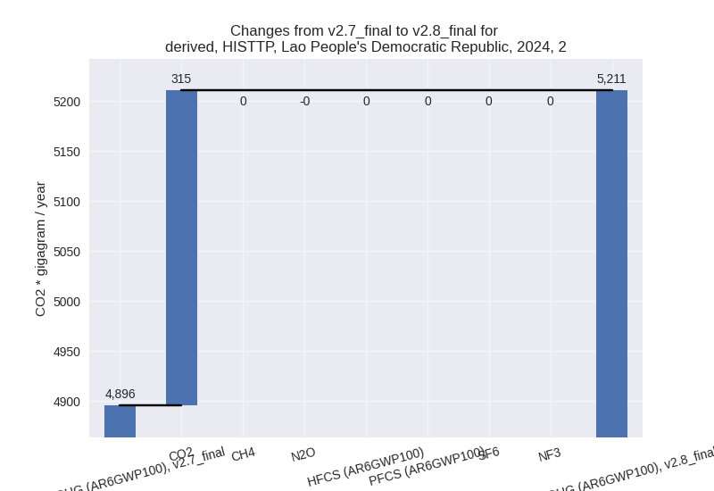
For 1990-2024 the changes per gas
are:
- M.AG: Total sectoral emissions in 2022 are 11213.82
Gg CO2 / year which is 30.5% of M.0.EL emissions. 2024 Emissions have
changed by 9.1% (1041.72 Gg CO2 /
year). 1990-2024 Emissions have changed by 0.7% (63.38 Gg CO2 / year). For 2024 the
changes per gas
are:
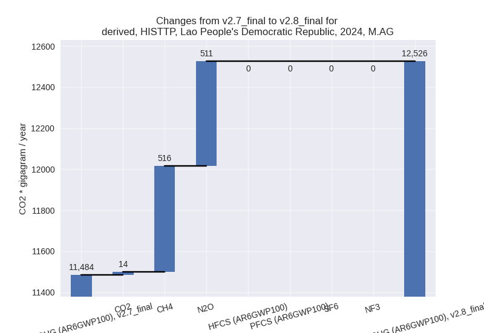
The changes come from the following subsectors:
- 3.A: Total sectoral emissions in 2022 are 6913.94
Gg CO2 / year which is 61.7% of category M.AG emissions. 2024 Emissions
have changed by 0.8% (59.19 Gg CO2 /
year). 1990-2024 Emissions have changed by 0.1% (3.36 Gg CO2 / year).
- M.AG.ELV: Total sectoral emissions in 2022 are
4299.88 Gg CO2 / year which is 38.3% of category M.AG emissions. 2024
Emissions have changed by 23.3%
(982.54 Gg CO2 / year). 1990-2024 Emissions have changed by 1.6% (60.02 Gg CO2 / year). For 2024 the
changes per gas
are:
There is no subsector information available in PRIMAP-hist.
- 4: Total sectoral emissions in 2022 are 573.79 Gg
CO2 / year which is 1.6% of M.0.EL emissions. 2024 Emissions have
changed by 4.6% (26.15 Gg CO2 /
year). 1990-2024 Emissions have changed by 2.4% (9.15 Gg CO2 / year). For 2024 the
changes per gas
are:
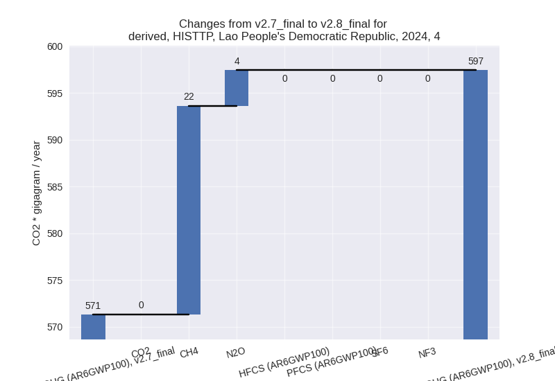
For 1990-2024 the changes per gas
are:
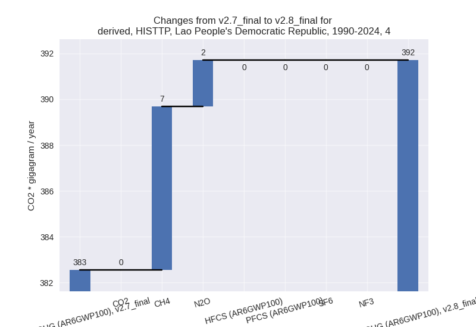
- 5: Total sectoral emissions in 2022 are 235.47 Gg
CO2 / year which is 0.6% of M.0.EL emissions. 2024 Emissions have
changed by -0.3% (-1.13 Gg CO2 /
year). 1990-2024 Emissions have changed by 17.5% (35.64 Gg CO2 / year). For 1990-2024
the changes per gas
are: